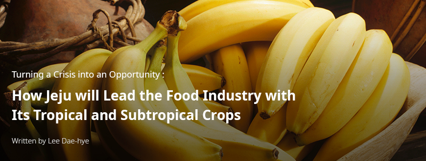
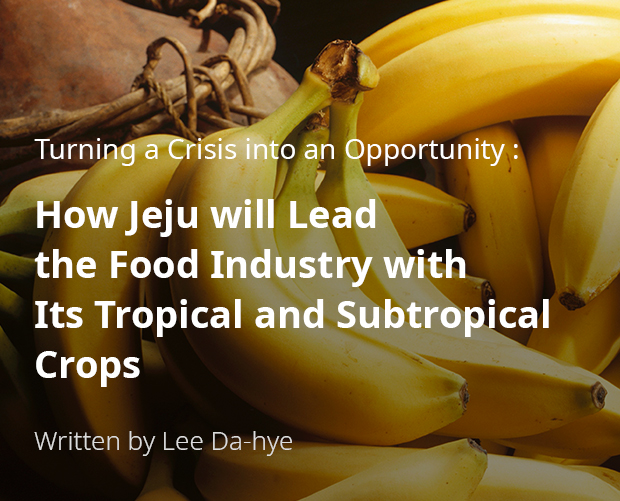
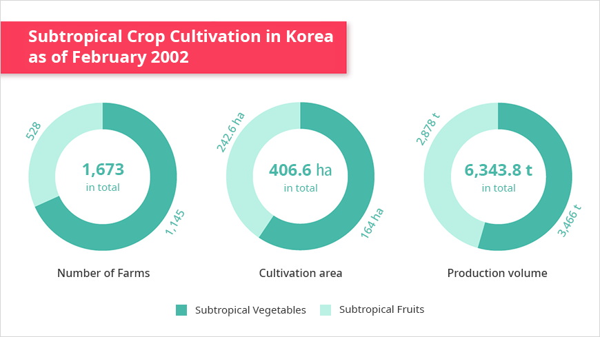
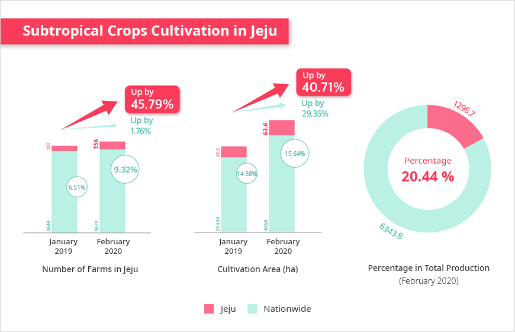
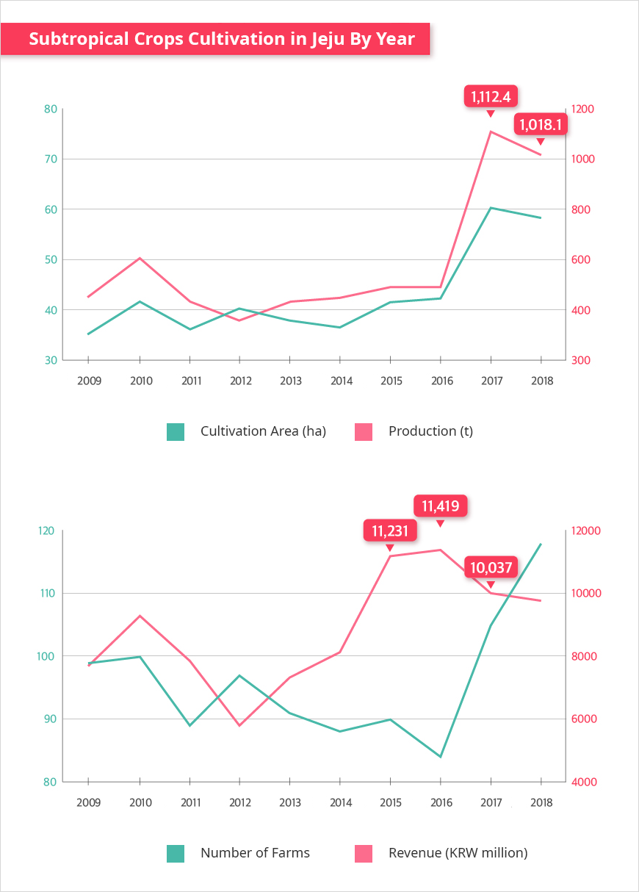
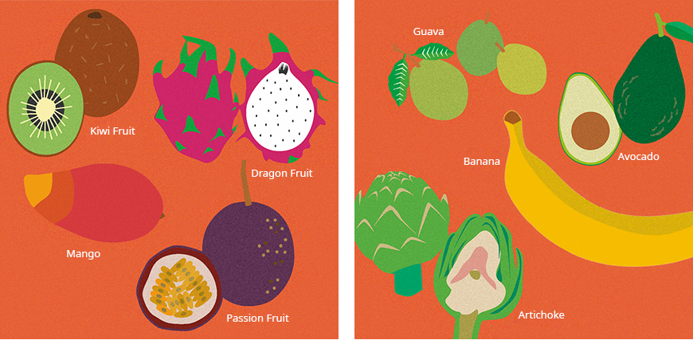
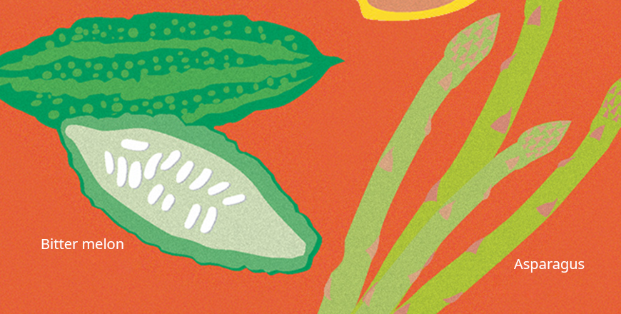

기획취재콘텐츠
- Home
- 제주라이프
- 기획취재콘텐츠
How Jeju will Lead the Food Industry with Its Tropical and Subtropical Crops 새로운 글




Well-grown olives hang from trees, basking in the sunlight on an open field. Banana trees, each measuring at least 2 m in height, nurture their fruit into full growth. Apple mangoes and papayas wait for the harvest. This place may look like it belongs to a farm in Southeast Asia or the Mediterranean. However, what if I told you that I was describing a farm in Jeju Island, Korea? In fact, olives, bananas, apple mangoes, and papayas are some of the subtropical crops widely grown on this island.
- Yujin Farm is a subtropical orchard in Jeju. The farm grows a variety of subtropical fruits,
including papayas and bananas. ⓒYoon So-jin -
including papayas and bananas. ⓒYoon So-jin -
Climate Change Is Changing the Crop Map
According to the fifth report from the Intergovernmental Panel on Climate Change (IPCC), Jeju’s average temperature has risen by around 1.6°C over the last eight decades and is still rising at an increasing rate. Korea’s Rural Development Administration (RDA) projected that subtropical areas will take up 26.6% of Korea’s agricultural land by 2060. According to the administration, the percentage is expected to reach 62.3% by 2080, which means the majority of land in the Korean Peninsula will belong to the subtropical climate zone. In fact, Jeju is already on the northern boundary of the subtropical climate zone. The rapid warming is likely to push the farming areas of napa cabbages, daikon, and other winter crops further north, and will replace these crops with subtropical crops. Tangerines were originally grown in Jeju and the southern region of the peninsula. By 2019, the tangerine-growing areas have expanded to include a part of Gyeonggi-do. Jeju has been consolidating its standing as a producer of tropical and subtropical crops, such as mango, banana, and papaya. Korea’s transition from a temperate climate to a subtropical climate has changed the country’s agricultural map.


Subtropical Crop Cultivation in Korea as of February 2020
-
Number of Farms 1,673 in total
- Subtropical Vegetables 1,145
- Subtropical Fruits 528
-
Cultivation area 406.6 ha in total
- Subtropical Vegetables 164 (ha)
- Subtropical Fruits 242.6 (ha)
-
Production volume 6,343.8 t in total
- Subtropical Vegetables 3,466t
- Subtropical Fruits 2,878t

※ Source: RDA, Current Status of Subtropical Crop Cultivation (February 2020)
As of February 2020, Korea reported a total of 1,673 farms growing subtropical crops, with a total cultivating area of 406.6 ha, and a total production at 6,343.8 t. A total of 1,145 farms grow 3,466 t of subtropical vegetables on cultivating lands totaling 242.6 ha. As for subtropical fruit, the number of farms stands at 528, the total cultivating area at 164, and the total production at 2,878 t. Balsam apples take up the largest cultivating area among subtropical vegetables, followed by turmeric and allium hookeri. Among subtropical fruits, mangoes take up the largest cultivating area, followed by passion fruit and banana. The cultivating area of mangoes, papayas, dragon fruit, and olives have been steadfastly increasing over the last three years.
In Jeju, as of February 2020, 156 farms grew subtropical fruit on lands totaling 63.6 ha. The farms accounted for 20% of the nationwide production by growing 1,296.7 t of subtropical fruit. Nationwide, the number of farms growing subtropical crops increased by 1.76% from January 2019. On the other hand, the number of farms growing subtropical crops increased from 107 to 156 in the same period, recording a 45% increase. The total cultivating area of the crops in Jeju also increased by more than 40%, from 45.2 ha to 63.6 ha. The statistics clearly show that tropical/subtropical crop farming in Jeju is growing in terms of both the number of farms and the total cultivating area.


※ Source: RDA, Current Status of Subtropical Crop Cultivation (February 2020)
Tropical and Subtropical Crops in Jeju
Starting in 2008, Jeju began to grow subtropical and tropical crops. The practice began with mango, which was followed by dragon fruit, guava, atemoya, avocado, and passion fruits. Jeju also tested asparagus, broccoli, kohlrabi, artichoke, beet, brussels sprout, balsam apple, and other subtropical vegetables known for their adaptability to Jeju’s environment, and farmers began developing cultivating techniques for the crops. Some of the crops are still grown today. In 2014, Jeju succeeded in the outdoor cultivation of olives and began distribution. Building on the previous experience with the cultivation of tropical and subtropical crops, Jeju created its own apple mango and banana brands, which recorded positive results in the market.
In 2018, 118 farms in Jeju produced 1,018 t of subtropical crops on lands totaling 58 ha and earned KRW 9,788 million in revenue. While the cultivation area or the number of farms remained from 2009, growth in production and revenue has progressed. With advancements in farming technologies and the growth of farmers’ capabilities, tropical and subtropical cultivation in Jeju has successfully transitioned from the experimental stage to commercial proportions. Farmers in Jeju currently grow a wide range of subtropical fruits in small quantities, of which banana and passion fruit take up the largest percentage. While specific statistics have not been compiled, balsam apple, turmeric, okra, allium hookeri, cilantro, morning glory, and other subtropical vegetables are grown across the island.


As of 2018, among subtropical fruits, apple mango topped the list in terms of cultivation area, production, and revenue. Mango is one of the world’s most iconic tropical fruits. The fruit has gained global popularity with its soft texture and sweetness. Many farmers in Jeju grow apple mango, which offers a stronger aroma and an even softer texture. A ripe mango only maintains its quality for around 10 days. For this reason, imported mangoes are harvested before they are fully grown and distributed in Korea after fumigation or chemical treatment. The taste and aroma of home-grown mangoes are bound to be different because they are only harvested when fully ripe. According to Ko Seung-chan, a researcher at the Jeju Agricultural Technology Center, the sugar content of imported mangoes measures at 12 Brix or lower, whereas the sugar content of Jeju-grown apple mangoes is 15 Brix or higher. Mangoes are also highly profitable. The fruit’s profit rate is 1.5 times higher than that of greenhouse-grown tangerines. Mango’s high sugar content and soft texture make it a popular choice as an ingredient in fruit salads, shaved ice, yogurt, and other desserts. In 2008, Hotel Shilla Jeju launched the Jeju Apple Mango Shaved Ice as its signature summer dish. The dessert’s popularity is still growing despite its less than affordable price (over KRW 50,000), thanks to its refined flavor and aroma.

- Illustration: Relish -
Kiwifruit is not included in the subtropical fruit survey by the Jeju Agricultural Technology Center, but it accounts for the highest production volume among subtropical crops in Jeju. According to the 2018 fruit revenue data, 521 farms produced around 8,300 t of kiwifruit, which earned them KRW 30 billion in revenue. Jeju farms cultivate a wide range of kiwifruit cultivars, including those developed in Korea, such as gold kiwi and red kiwi. Jeju exported 80 t of kiwifruit to Hong Kong, Malaysia, Singapore, and Japan in 2017, and the export volume doubled to around 160 t in 2018. Zespri, a premium kiwifruit brand created by New Zealand kiwifruit producers, signed a cooperation deal with the City of Seogwipo in 2004. The partnership resulted in the release of Jeju Gold Kiwi in January 2007, and the brand and the city have been continuing their partnership to date. In 2015, RDA developed Korea’s own kiwifruit cultivars (Jecy Gold and Halla Gold) and distributed them to various kiwifruit farms. Through these cultivars, local farmers do not need to spend on royalties for foreign cultivars, and agricultural productivity is also enhanced.
Cultivating bananas in Jeju began as early as 1980. Banana-growing farms decreased in the following years with the introduction of imported bananas but began to increase once again in 2016. From 3 banana-growing farms in Jeju in 2016, the number increased to 17 in 2017, and 28 in 2018. Revenue also increased by more than 1,300%, from KRW 171 million in 2016 to KRW 2,345 million in 2018. Despite its higher price range compared to imported bananas, Jeju bananas are gaining huge popularity among food safety—conscious Korean consumers.

- Illustration: Relish -
Balsam apple is a vine-type vegetable rich in vitamin C and minerals. The vegetable is known to prevent diabetes and obesity and alleviate hypotension symptoms. These benefits add to its popularity as a “health functional” crop. The total area of balsam apple-growing lands in Korea is 107.92 ha, which is the largest among the subtropical crops grown in Korea. Balsam apple has wide-ranging applications as a health food and is an ingredient for various Asian foods, which enhances its potential as a high-value crop within the senary industry.
Jeju, a Region Tailored to the Commercial Cultivation of Subtropical Crops
As discussed above, Jeju is fast responding to climate change and leading the development, production, and popularization of subtropical crop cultivars. Jeju offers various benefits tailored for the cultivation of subtropical crops. Located at the southernmost tip of the Korean Peninsula, the island offers the benefit of hotter average temperatures, which lowers the cost of artificial temperature control for subtropical crops. Moreover, some subtropical crops can be grown without heating. The commercial cultivation of subtropical crops can also benefit from Jeju’s background as a popular tourist spot. Thanks to the island’s brand as a tourist destination with excellent natural environments and biodiversity, Jeju is emerging as the mecca of the bio industry.
The Agricultural Research Center for Climate Change of the RDA, located in Ora-dong, Jeju, is a member institution of the National Institute of Horticultural and Herbal Science. Founded in 2008 and reorganized in 2015, the center has been working with the Jeju Agricultural Technology Center to overcome climate change and develop competitive crops by developing, testing, and distributing tropical and subtropical cultivars as well as cultivation technologies.
As part of its efforts to develop food products for the future, the RDA launched research projects on subtropical crops in 2008. As a result of the project, 50 subtropical cultivars have been introduced to Korea. In 2017, RDA selected 12 subtropical vegetables, including okra, allium hookeri, balsam apples, and turmeric, and 8 subtropical fruits, including mango, passion fruit, and papaya, to be subjected to intensive cultivation projects. In addition, RDA continues to research, develop, and distribute subtropical cultivation techniques to help farmers increase their productivity. RDA also developed a nonheated greenhouse cultivation technology for balsam apples, which increases the cultivation capacity by 24%. It also established the optimal planting period for outdoor-cultivated long beans, increasing the crop’s cultivation capacity by 33%. Other RDA accomplishments include the selection of artichoke cultivars suitable for the Korean environment, the development of a cultivation technology that raises the cultivation quantity by up to 27%, and the development of a seedling breeding technology that lowers the price of passion fruit seedlings to as low as KRW 2.4 million per 10 acres.
Along with the development of cultivation technologies for tropical and subtropical crops, RDA also strives to foster the foundation for Korea’s agriculture industry. To improve the competitiveness of Jeju’s crops in response to the opening of the Korean agricultural market under various free trade agreements (FTAs), Jeju invested KRW 16.1 billion between 2013 and 2019 into a proejct to develop a high-profit crop cultivation complex. In 2020, Jeju will invest KRW 3,833 million (Jeju budget KRW 2.3 billion; out-of-pocket payments KRW 1,533 million) into a new Elite High-Profit Crop Cultivation Complex. The eligible crops are tropical and subtropical vegetables, flowers, cash crops, and subtropical fruits, and the project is aimed at promoting the cultivation of subtropical and tropical crops that require greenhouse cultivation so that farms can increase their profit by growing these high-value crops.
Subtropical Crops and the Senary Industry
The development of the senary industry is one of the prerequisites for raising the competitiveness of the agriculture industry. Korea is currently focusing on stabilizing the cultivation of tropical and subtropical crops by improving the relevant cultivars and enhancing their profitability, along with various experiments to test the possibility of developing a senary industry based on the crops.
The Ahopgut Village in Nakcheon-ri, Hangyeong-meyon, Jeju-si planted olive trees outdoors. Fortunately, the soil and climate conditions of the village proved to be well-suited for olive farming. The village runs a pizza-making program for visitors, allowing them to use the village’s own olives. Jeju plans to use the program as an opportunity to verify the demand for Jeju olives in the market and develop and distribute olive oil using the olives grown in the village. Furthermore, coffee farmers in Jeju produce coffee-based wine as well as coffee beans to further add value to the harvested crops.
The Jeju Agricultural Technology Center offers various training programs for people interested in starting their own agri-product-processing businesses, in which participants learn how to develop and sell jam, vinegar, wine, and other food products processed from crops. Yujin Farm, which grows various tropical and subtropical crops such as banana and papaya, is one of the center’s beneficiaries. The farm develops and sells food products made from banana, pineapple, and other tropical fruits, and it also offers various tourist activity programs.
Challenges Ahead: Promotion and Brand Development
brand strategies distinguished from imported crops.” Kiwifruit, mango, and banana have successfully raised awareness on Jeju’s tropical/subtropical brands, thanks to high-end brand strategies. Jeju bananas are sold at prices twice higher than imported bananas, and it still generates steady sales because of its brand image as healthy fruit grown in eco-friendly ways. Similarly, Jeju apple mangoes, despite their high price range, are widely sold at department stores. The fruit has built a high-end brand image as a fruit with high sugar content and outstanding quality.
According to RDA Researcher Kim Seong-cheol from the Agricultural Research Center for Climate Change, to increase the sale of subtropical fruits and vegetables, Jeju needs to further promote dishes cooked with the fruits and vegetables.
Fruits are mostly consumed fresh. On the other hand, subtropical vegetables are typically processed before consumption. Most Koreans are unfamiliar with the taste of subtropical vegetables. To improve the acceptability of these vegetables, we are developing fusion dishes that combine Korea’s traditional crops, such as napa cabbage, onion, and hot pepper, with subtropical vegetables,
- The Agricultural Research Center for Climate Change Researcher Kim Seong-cheol.
- (Left)Chayotae leaf soup ⓒAgricultural Research Center for Climate Change, RDA
(Right)Fried Indian spinach corn ⓒAgricultural Research Center for Climate Change, RDA -
(Right)Fried Indian spinach corn ⓒAgricultural Research Center for Climate Change, RDA -
In 2016, the Agricultural Research Center for Climate Change held a demonstration event on fusion Korean cuisine containing using subtropical vegetables. The event was aimed at promoting tropical and subtropical crops grown in Korea. The event was joined by professional chefs as well as a team from Gyeonggi University-Department of Food Service Management and Culinary Arts, led by Professor Kim Myung-hee. The participants unveiled 24 kinds of kimchi (kkakdugi), stir-fried dishes, salads, and desserts containing 15 subtropical crops grown in Jeju, such as balsam apple and morning glory. After the event, visitors received Indian spinach seedlings and booklets containing subtropical crop recipes.
The increasing familiarity of multicultural families and the younger generations on Southeastern cuisine is driving the demand for subtropical crops in Korea. In the past, cilantro was not popular in Korea on account of its strong scent. Today, cilantro is widely popular in the country, with some families growing their own crops. The number of Southeast Asian restaurants with menu items containing tropical and subtropical crops is increasing in Jeju, as well as in Seoul. We expect that advancements in cultivation technologies and the growth of Jeju-based tropical and subtropical brands will raise the popularity of the crops further in the future.
- Agricultural Research Center for Climate Change, RDA
In March, the Jeju Agricultural Technology Center announced its plan to select olive cultivars available for outdoor cultivation and test their potential as a new source of income for farmers. The center added that it is testing the possibility of growing dragon fruit, star apple, and other subtropical fruits in Jeju. As for lychee and other fruits that are confirmed to be cultivatable in Jeju, the center will develop and distribute a guidebook on the necessary cultivation technologies for the benefit of the island’s farmers. In addition, the Agricultural Research Center for Climate Change continues to experiment with the cultivation environment for various subtropical and tropical crops and develop cultivars tailored to Jeju’s climate. Such initiatives are being done at the center’s greenhouse facility in Ora-dong, Jeju-si.
In the near future, we can expect to see more pizza dishes sprinkled with Jeju-grown olives, salads with papayas from Jeju, and stir-fried morning glories on Korean tables. Jeju is changing its local specialty landscape with tropical and subtropical crops through its world-class R&D, the selection of tropical and subtropical cultivars, the advancement of agricultural technologies, and its brand development for fresh and clean agricultural produces.